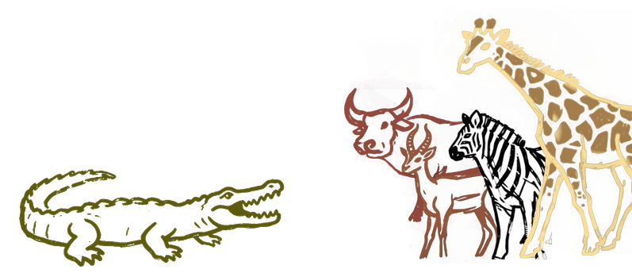
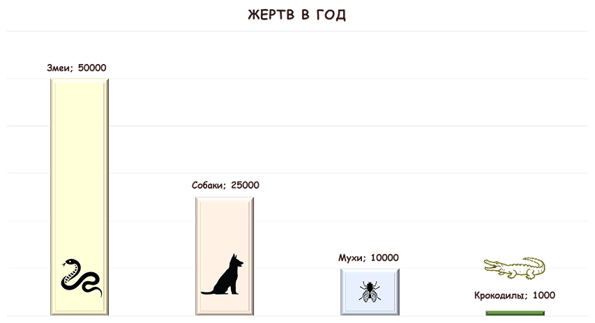

Питание
Детёныши (длиной менее 1 метра) примерно на 70% питаются насекомыми и другими мелкими беспозвоночными.
Подростки (примерно 1,5 метра в длину) начинают еще есть крабов и моллюсков.
Взрослый крокодил всеяден!

Становясь старше, нильский крокодил питается более крупными животными, которые пришли на водопой или пересекают реку. Это зебры, африканские буйволы, антилопы гну. Может нападать на слонов, носорогов, жирафов, бегемотов и даже львов.
Нильские крокодилы охотятся погрузившись под воду полностью, либо оставив на поверхности только глаза и ноздри. Он атакует всегда неожиданно, выпрыгивая из воды и практически в мгновенно хватая свою жертву.
ИНТЕРЕСНЫЕ ФАКТЫ
На самом деле крокодилы не такие кровожадные, как их описывают. От акул и крокодилов людей погибает гораздо меньше, чем от комаров, змей и собак. Комары - 2 000 000 человек в год

Охотятся крокодилы, только когда голодны. Если рептилия сыта, она никогда не нападет на возможную жертву, даже если будет такая возможность.